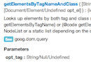

Abstract
This template makes your JavaScript document more beautiful and functional.
It works on JsDoc2.
|
Inheritance hierarchy |
Eye-catching labels  |
Beautiful code views |
Simple classes index 
|
Demo
Demo is here.
Install
To produce output files you must use a template to format the generated documentation. Use the
-toption to specify which template you wish to use.
java -jar jsrun.jar app/run.js myscripts/ -t=templates/JsDoc2-Template-Bootstrap
See JsDoc document, if you want more information.
Plugin
This template adapts these plugins.